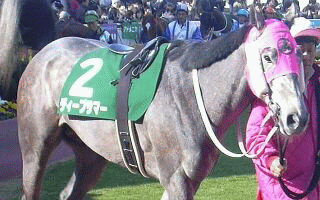
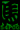

54POG
paper owner game since 2002

第19回クリスタルカップG3 優勝ディープサマー(ナオー)
--産駒リスト--
優先獲得馬リスト
’２３産駒所有馬リスト
’２２産駒所有馬リスト
’２１産駒所有馬リスト
’２０産駒所有馬リスト
’１９産駒所有馬リスト
’１８産駒所有馬リスト
’１７産駒所有馬リスト
’１６産駒所有馬リスト
’１５産駒所有馬リスト
’１４産駒所有馬リスト
’１３産駒所有馬リスト
’１２産駒所有馬リスト
’１１産駒所有馬リスト
’１０産駒所有馬リスト
’０９産駒所有馬リスト
’０８産駒所有馬リスト
’０７産駒所有馬リスト
’０６産駒所有馬リスト
’０５産駒所有馬リスト
’０４産駒所有馬リスト
’０３産駒所有馬リスト
’０２産駒所有馬リスト
’０１産駒所有馬リスト
’００産駒所有馬リスト
ルール
成績
更新情報

ＰＯＧ自動集計